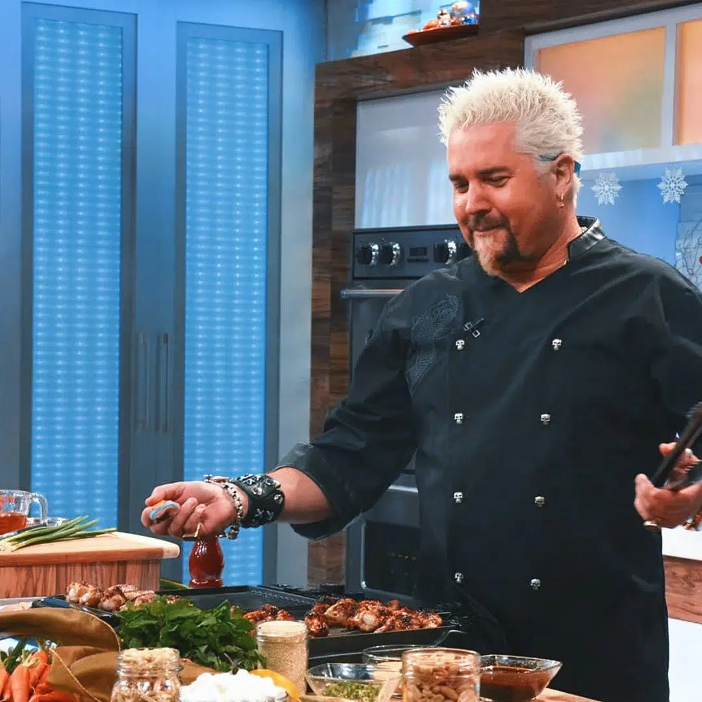
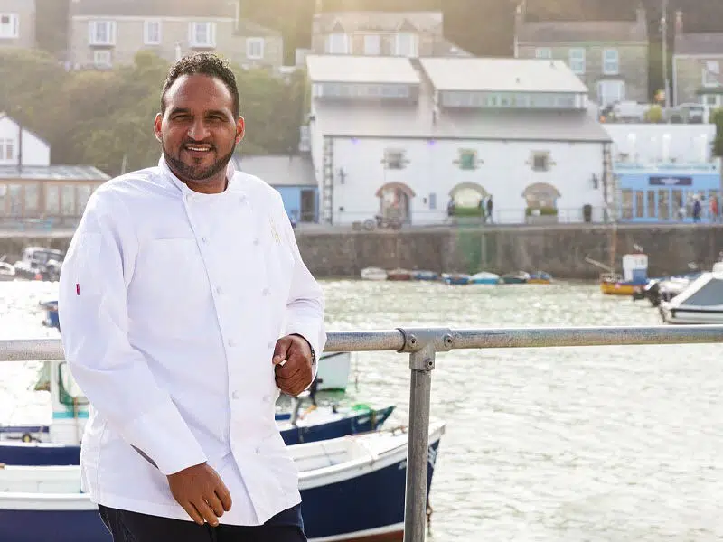

Our Chefs
Direct the preparation, seasoning, and cooking of salads, soups, fish, meats, vegetables, desserts, or other foods. Plan and price menu items, orders supplies, and keep records and accounts. Supervises and participate in cooking and baking and the preparation of foods. Writes weekly schedules according to business and projected goals.

Gordon Ramsay
He was appointed Officer of the Order of the British Empire in 2006, by Queen Elizabeth II.

Guy Fieri
According to the number of searches on Google, Guy Fieri is the second most popular chef in the world in 2022.

Michael Caines
The third most popular name on Google hails from Devon, England, and is one of the UK’s most celebrated chefs.